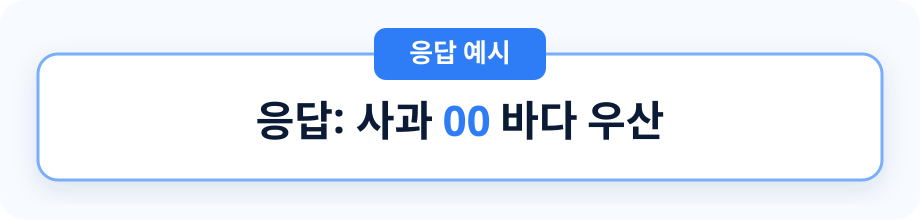

simple memory span task ver2
단어 단기 기억 과제

과제 방법
- 화면 중앙에 단어가 하나씩 나타납니다.
- 한 시행에는 단어 4개 또는 6개가 무작위 조건으로 제시됩니다.
- 단어가 모두 지나간 뒤 1초 또는 4초 동안 기억을 유지합니다.
- 기억나는 단어를 순서대로 띄어쓰기로 입력합니다.
- 만약 앞 단어가 기억나지 않고, 뒷 단어만 기억난다면 숫자 00을 자리에 맞춰 넣어주세요.
- 연습 시행은 4번, 본 시행은 16번 진행합니다.
+
기억한 단어를 입력하세요
과제가 끝났습니다
수고하셨습니다. 아래 버튼을 눌러 결과를 전송해 주세요.